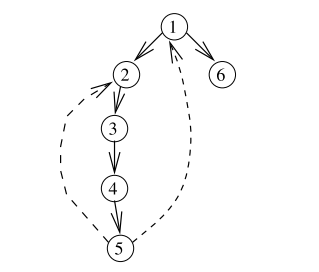

Programming
2018 April 02
Finding articulation Points in Graphs
Given a connected graph with n vertices and m edges, the vertices are said to be articulation vertices when removing them would result in a disconnected graph. The regular approach would be remove single point from the graph and check if the remainig graph is connected or not by DFS/BFS. This would result in complexity of O(n(n+m)) to find all the articulated points. Instead in order to find the points in O(n+m) we use the following algorithm. Simply saying when there are not back edges all the inner points are articulated points. If there is a back edge connecting to its ancestors which is not its parent then it usually results in a cycle mostly where the points in between the ancestor and out vertex would not result in disconnectivity of graph since having an alternate back path which would connect remaining vertices.

Conditions of an articualtion point:
- If the point is root and has more than one child.
- If the children's discovery time is not less than the discovery time of parent. Then parent is an articulation point.
#include <iostream> #include <cstring> #include <vector> using namespace std; class Graph{ private: int V,time; vector<int> articulation_points; int *parent,*lowest_ancestor,*discovered_time; bool *visited,done,*articulation_point; vector<int> *adjacency_list; void articulation_checker(int u){ visited[u] = true; int num_child=0; discovered_time[u] = lowest_ancestor[u] = ++time; for(vector<int>::iterator i = adjacency_list[u].begin();i != adjacency_list[u].end();i++){ if(!visited[*i]){ num_child++; parent[*i] = u; articulation_checker(*i); lowest_ancestor[u] = min(lowest_ancestor[u],lowest_ancestor[*i]); if(parent[u]==-1 && num_child>1){ articulation_point[u] = true; } else if( parent[u]!= -1 && lowest_ancestor[*i] >= discovered_time[u]){ articulation_point[u] = true; } } else if(*i != parent[u]) lowest_ancestor[u] = min(lowest_ancestor[u],discovered_time[*i]); } } public: Graph(int V){ this->V = V; time = 0; done = false; adjacency_list = new vector<int>[V]; parent = new int[V]; lowest_ancestor = new int[V]; discovered_time = new int[V]; visited = new bool[V]; articulation_point = new bool[V]; memset(parent,-1, V*sizeof(int)); memset(visited,false,V*sizeof(bool)); memset(articulation_point, false, V * sizeof(bool)); } ~Graph(){ delete [] adjacency_list; delete [] discovered_time; delete [] parent; delete [] lowest_ancestor; delete [] articulation_point; delete [] visited; } bool addedge(int u,int v){ u = u-1; v = v-1; if (u < 0 || u >= V) return false; if (v < 0 || v >= V) return false; adjacency_list[u].push_back(v); adjacency_list[v].push_back(u); return true; } void dfs(){ for(int i=0;i<V;i++){ if(!visited[i]) articulation_checker(i); } } vector<int> getarticulation_points(){ if(done) return articulation_points; dfs(); done = true; for (int u = 0; u < V; u++) if (articulation_point[u]) articulation_points.push_back(u); return articulation_points; } }; int main(){ int num_vert,num_edg,vert1,vert2; while(1){ cin >> num_vert >> num_edg; if(num_vert !=0 && num_edg !=0){ Graph G(num_vert); for(int i=0;i<num_edg;i++){ cin >> vert1 >> vert2; G.addedge(vert1,vert2); } cout << G.getarticulation_points().size() << "\n"; } else break; } return 0; }
2018 March 22
- Given a DAG try to find all the paths through which we can reach the destination from source.
- Solve SUBMERGE problem in SPOJ.
Older Programs
Merge Two Binary Trees
class Solution { public: TreeNode* mergeTrees(TreeNode *t1,TreeNode *t2) { if(t1==NULL && t2==NULL){ return NULL; } else{ if(t1==NULL){ t1 = t2; } else if(t1 !=NULL && t2 !=NULL){ t1->val = t1->val + t2->val; t1->left = mergeTrees(t1->left,t2->left); t1->right = mergeTrees(t1->right,t2->right); } return t1; } } };
Reverse words in a String
Learned about input stringstream have to check soem more regarding stringstream operation.
class Solution { public: string reverseWords(string s) { std::istringstream tmp(s); std::stringstream ss; std::vector<std::string> collection((std::istream_iterator<std::string>(tmp)),std::istream_iterator<std::string>()); for (std::vector<std::string>::iterator it=collection.begin();it!=collection.end();it++){ std::reverse((*it).begin(),(*it).end()); ss << *it << " "; } std::string result = ss.str(); result.pop_back(); return result; } };
Encode and Decode TinyURL
Learned about find operation in unordered::map container it returns an const_iterator which points to the given key. If the map doesn't have the key then it will return map.end().
class Solution { public: std::unordered_map<std::string,std::string> urlencodebuck; std::unordered_map<std::string,std::string> urldecodebuck; std::string alphanum = "abcdefghijklmnopqrstuvwxyz0123456789"; std::unordered_map<std::string,std::string>::const_iterator check; // Encodes a URL to a shortened URL. string encode(string longUrl) { check = urlencodebuck.find(longUrl); if(check != urlencodebuck.end()) return urlencodebuck[longUrl]; else{ std::string shortUrl = ""; for(int i=0;i<6;i++){ shortUrl = shortUrl + alphanum[(rand() % 36)]; } urlencodebuck[longUrl] = shortUrl; urldecodebuck[shortUrl] = longUrl; return urlencodebuck[longUrl]; } } // Decodes a shortened URL to its original URL. string decode(string shortUrl) { return urldecodebuck[shortUrl]; } };
Multiples of 3 & 5 below 1000
Time taken: 0.00006s
#include <iostream> #include <time.h> int main(){ clock_t tStart = clock(); int multiple_3=0,multiple_5=0,multiple_15=0,i=0,sum=0; while(multiple_5 <1000){ sum = sum + multiple_3 + multiple_5; multiple_3 = multiple_3 + 3; multiple_5 = multiple_5 + 5; // multiple_5 = Multiple5(multiple_5); } while(multiple_3<1000){ sum = sum + multiple_3; multiple_3 = multiple_3 + 3; } while(multiple_15<1000){ sum = sum - multiple_15; multiple_15 = multiple_15 + 15; } std::cout << sum << '\n'; printf("Time taken: %.5fs\n", (double)(clock() - tStart)/CLOCKS_PER_SEC); return 0; }
My submission
Time taken: 0.00007s
#include <iostream> #include <time.h> int Multiple5(int multiple_5){ if (multiple_5%3==0){ multiple_5 = multiple_5 + 5; Multiple5(multiple_5); } else return multiple_5; } int main(){ clock_t tStart = clock(); int multiple_3=0,multiple_5=0,multiple_15=0,i=0,sum=0; while(multiple_5 <1000){ sum = sum + multiple_3 + multiple_5; multiple_3 = multiple_3 + 3; multiple_5 = multiple_5 + 5; multiple_5 = Multiple5(multiple_5); } while(multiple_3<1000){ sum = sum + multiple_3; multiple_3 = multiple_3 + 3; } std::cout << sum << '\n'; printf("Time taken: %.5fs\n", (double)(clock() - tStart)/CLOCKS_PER_SEC); return 0; }